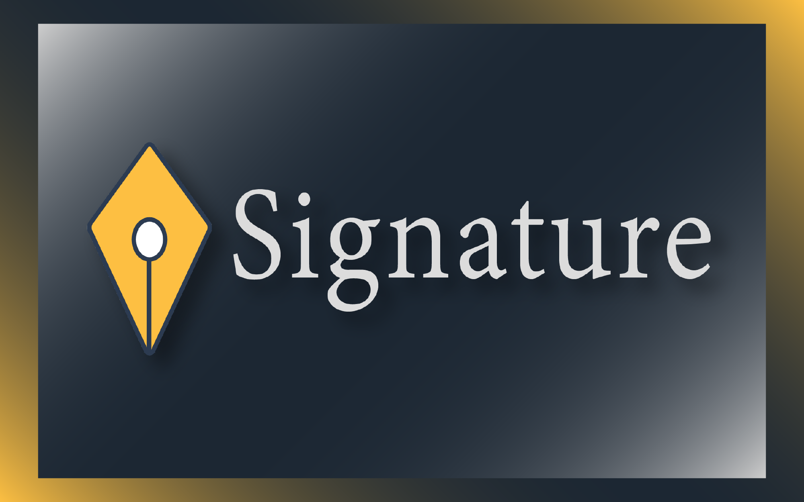
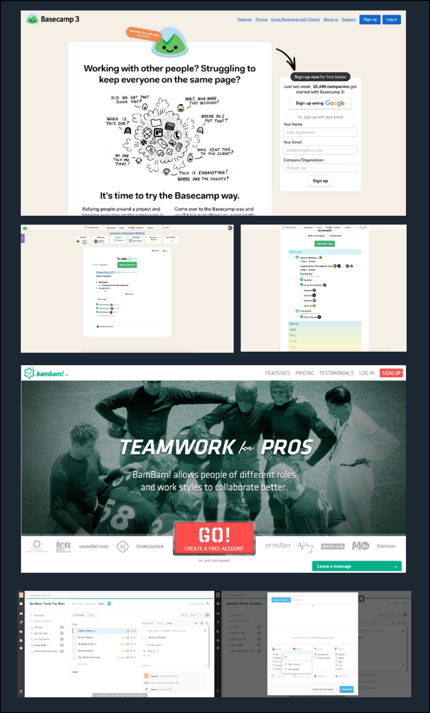
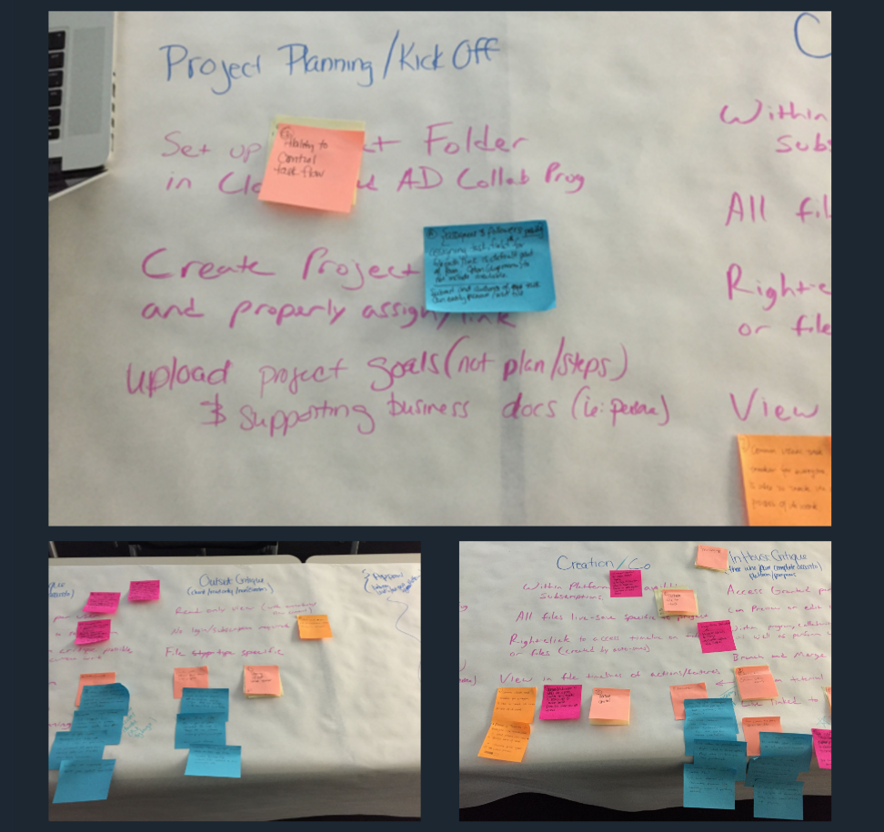

Signature: Building a Collaboration Platform
Research, Architecture, and DesignThe goal of this project was to design a collaboration platform to be used by Autodesk users. Autodesk is a software company that makes a suite of tools used by architects, engineers, manufacturers, video game developers, and anyone else who works with 3D modeling. My teammates and I were a mix of 6 graduate students from the User Experience and Industrial Design Programs at Philadelphia University.

Process and Methodologies
The project kicked off with an introductory presentation by Kevin Vandecar, a Software Engineer at Autodesk. Mr. Vadecar spoke to my cohort about the software his company produces, their differing use cases, the technology they each run on, and gave us a high level understanding of how each application is used in conjunction with others to accomplish a project. Kevin Vandecar also spoke of the technical direction the company is headed in. Following this, he gave a demonstration of 3&4D models made using an assortment of their products.
We moved through the project in the following phases:
1. Research Phase
2. Structural Design Phase & Critique
3. Visual Design Phase & Critique
4. Prototyping Phase & Critique
The effort to design this collaboration platform were collaborative itself, which worked to our advantage as we were experiencing similar frustrations and needs of our potential users. In each phase, responsibilities and mini projects were divied up among the 6 of us and then we resturned to eachother to combine our work. The fuit of our labor in each phase was then presented to, and critiqued by, a group of our peers. These presentations uncovered issues and unanswered questions in our designs, serving as a sort of test phase throughout the process. Every phase was iterative and punctuated with a critique session.
1. Research Phase
Competitive Analysis
Once we had some context under our belts, the first step we needed to take was to explore existing platforms.
Everyone was given the same journey as a way to move navigate through existing applicaitons and interact with a
majority of the respective features.
The journey was this design critique cycle:
Create Something,
Critique it,
Hand it off,
Revise,
Critiuqe again,
and Approve.
The applications assigned to us to analyze and compare were Basecamp3 and BamBam!.
Basecamp is web-based project and task management platform. The main features of this application are to-do lists, public messaging, direct messaging, scheduled events or check-ins, and a "bird's eye view" of users' recent activity.
BamBam! is also a web-based project managment platform. The main features BamBam! offers are detailed task attributes, custom workflows, permissions, milestone tracker, and accounts with multiple project capability.

Current State Flow Diagrams
As my team and I used each platform, we took notes and constructed a real-time user flow using post-it notes. These post-its were digitized and arranged into more infographic flows. These allowed my team and I to visually compare the flows, notice any bottlenecks, and make our notes and comments much more apparent at a high level.
Findings
After using the two programs ourselves mapping out their functionality, as it pertained to our user journey,
we found that we had a list of recurring frustrations as well as a [short] list of features we were pleased with.
- Updates made to the task list were not live.
- There was no file history.
- Files were not associated to task/To-Do.
- Tasks and Workflow were not directly linked to each other.
User Research
My team had the opportunity to speak to a panel of professionals who regularly use collaboration platforms as well as Autodesk
applications. As someone who has never used Autodesk tools, nor do I have much experience collaborating accross digital platforms, this
was an eye-opening and welcomed session. As a UX designer, I was excited to make even more sense of my research so far, as well as gain
further understanding.
- Annotation is important and design intent should be communicated.
- These platforms should be adaptable, rather than forcing the user to adapt to it.
- Critiques should be leveraged into actions.
The Mission Statement
With much more familiarity with other collaboration platforms, Autodesk applications, the work of our potential users, and the needs of these users, we were ready to start ideating on the features and functionality of our own platform. However, before we could dive in, we needed to hammer out and state the goal of this application. After considering all we had learned so far, we boiled our goals down into the following mission:
"Our collaboration platform seeks to bridge communication and knowledge gaps between collaborators, as well as seamlessly integrate all aspects of the platform with the associated file."

Future State Flow Diagram
Using the mission statement as a clearly stated goal, we used post-its to start mapping out the collaboration platform that had been developing in each of our heads. We focused on small interaction of the user journey, or features we wanted to include, and iterated on these interactions. Once we had several mini flows we began promoting the best versions of each mini flow and strung them together, constructing a greator, overarching future state flow.
Through our research, we knew there would be 3 main roles to keep in mind as user archetypes: the manager, the in-house collaborators, and the outside collaborators. Below you can see where each user falls on the flow as they follow the journey that was assigned to us.

2. Structural Design Phase
The Future State Flow was an incredibly imortant product of our process that greatly informed the Structural Design Phase. The infographic allowed us to require only a glance to understand the general flow of our platform and the areas [or features] of the platform that may require close attention. Most importantly, our flow helped us to better visualize our interactions and how disparate features are connected to eachother.
For this, the Structural Design Phase, my team and I worked independently on our own wires to present to the group. We agreed to work on large sections that may overlap to not only get the most accurate feel for each of our interpretations of the flow, but also to help brainstorm other sections of the flow for each other. Since wireframes are a common User Experience deliverable, myself and the other UX graduate students made the wireframes individually while the two Industrial Design students worked together to make a couple of wireframed pages to better explain more nuanced interactions that pertain to using Autodesk tools.
Throughout this project, I assumed the main leadership role which required me to assign team members tasks, hold them accountable, organize our documents, send out summaries of our classes, meetings, and critiques to the team to make sure everyone was on the same page, and offer encouragement. During this phase, this position really ramped up. I set a deadline for my team to submit wireframes to our group's Slack chat and a second deadline for us all to post any critiques and vote for which set of wireframes we should use to build out the rest of the application. I asked the ID students to send us thorough critques on each of the individual wireframes; I can't stress enough how invaluable their help was throughout this process. By fully critiquing even the structural designes we didn't move forward with, we were able to be better informed about what ideas to carry forward with, or change, in the full set of wireframes.
The team voted to build upon the wireframes I made to design the structure of the rest of the collaboration platform. Everyone was assigned a section of the flow to make wireframes for and then resturn to group to help put them together. We presented the first full set of wireframes to gain feedback and work out kinks. The image below shows a selection of wireframes to illustrate some of the iterative changes that were made after recieving feedback.
*Note: The yellow box indicates my individual work.
We found that our wireframes felt a little constricting especially on the workspace pages, where designers want—need—as much space as possible. For this reason, we made the header much thinner. We also realized we hadn't thought through some of the interactions in the left slide out. To address this, we moved some of the features that were in the left menu to the right slide out menu, where they would be accessible only when creating or critiquing projects in the workspace. Originially, though this isn't depicted in the selected wireframes above, the team thought we would model our messaging feature after that of Facebook and have it docked at the bottom of the screen. Again, this didn't seem to do much besides take up more precious real estate. In the iterations on the right, you can see that we opted to put messaging in the left slideout instead. Rather than including a button that lead to a list of the user's teammates, an iframe was used to place a scrolling list in the left menu so it was always accessible and required fewer clicks to interact with. Other changes, like the layout of the homepage [the first row of screens], were changes we made to better set ourselves up aesthetically. With the homepage example, it is worth noting that this layout eventually switched back to a version of its former self after recieving comparative feedback.
3. Visual Design Phase
Design Brainstorm
After our wireframes were built we could move on to designing the visuals that would sit upon that established structure. We approached this phase just as we had done with the Structural DEsign Phase. I set a deadline for team members to submit 2 pages to the group. Everyone had to make a visual design for the homepage and the second page could be any one we wanted. We were also expected to design a possible logo for our product, a collaboration platform we decided to call "Signature," referring to the electrongic signatures used to link users, files, and workflow tasks. This was mandatory for the UX students, though the ID students were encouraged to do they same. Our Industrial designers again worked together to send us several pages further illustrating hard-to-understand, field-specific features.
There was then a second deadline for everyone to submit critiques for all pages and vote for which we should use as a visual guideline while we design the rest of our platform. Below are 4 of the 5 visual designs submitted to the group to decide on. The fifth design is the one we chose and it is shown in much more detail further down.
*Note: The yellow box indicates my individual work.
Visual Design Iteration
The visual design we chose to use as our guide moving forward used a color pallet consistent with that used by Autodesk. It was clean and felt professional as well. With the design language established, we again worked individually on the same sections previously assigned to us during the Structural Design Phase. Each of us returned to the group with our the visual design applied to our respective sections and worked string them together into several pages portray the look of our overall platform.
This larger product was then presented and critiqued. The feedback we recieved was very valuable, as we were too close to our design and needed the eyes of outsiders to point out choices we needed to revisit. Below you can again see how we iterated through this phase.
*Note: The left slide out menu is my individual design as well the pages marked by the yellow box.
Most of what we changed had to do with visual clarity. In the second row, in my section, critique showed us that the buttons under each project were shaped a lot like the timeline to the right of that area. Because of this, there was a likening to the two features which had very different functions. In following two rows, there are workspace pages that required minor changes to more clearly indicate the interactions we were designing; like adding an arrow button abot the right menu. We also established a single format for the global navigation and addressed how this navigation would be different for outside collaborators who have fewer permissions [see the fourth row].
4. Prototyping Phase:
The Final Product — Signature
The final step was to put recreate our visual designs on our wireframes. We again worked individually to marry the wireframes and visual designs of our repsective sections. Each of us then made our sections interactive and ready to submit to each other by a given deadline. We set several meeting times to work toegther to combine the intereactive sections into a full prototype. Every UX team member acted as the expert on their section.
When the prototype was complete and functioning in a fluid manner from section to section, our ID counterparts acted as our quality and usability testers. They looked for functionality bugs as well as inconsistencies in design and concept. With their help, the UX team members refined the prototype enough to present for another round of critique. This final feedback shed light on any persisting issues and lead to the final product you see here.
You can click through the Axure prototype yourself here.